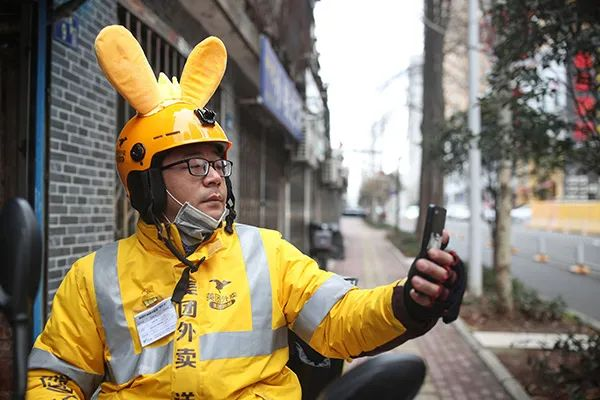
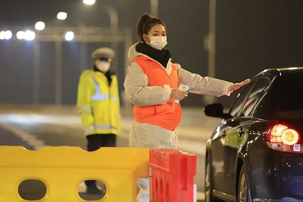
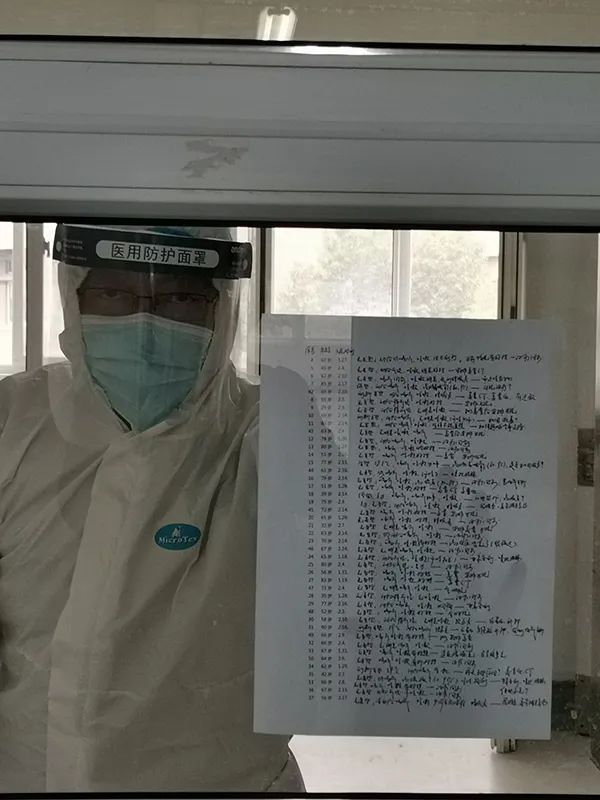
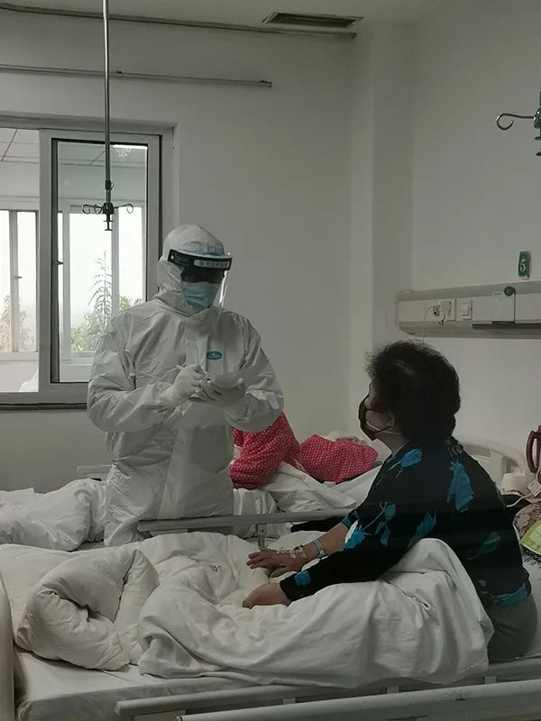

外卖订单里的武汉：穿越隔离的爱情、亲情与勇气
原文链接 备份链接 除夕前夜，因疫情蔓延，武汉宣布封城，机场、火车站、市内公共交通停闭，江城困围。封城以来，许多武汉人都承受着分离的苦楚，担心年迈独居的父母买不到菜，惋惜爱人最需要的时却不能陪在身边，常年在外工作的父亲错过仅有的看望孩子的 …
澎湃新闻记者 赵实
2月23日，是武汉与武汉人特别的一天。一个月之前的1月23日，武汉市新型冠状病毒感染的肺炎疫情防控指挥部发布1号通告，决定于当日10时关闭离汉通道，实施封城管理。
也是在这一天的16时，仍然身处武汉抗疫前线的国务院新闻办，召开了一场记者见面会，邀请在武汉疫情防控一线的普通工作者讲述他们团结奋战的故事，并回答记者提问。
这也是国务院新闻办历年所举办的各类发布活动之中，最为特殊的一场——发布桌被简单的桌椅代替，没有人准备讲稿和资料，发言嘉宾面对镜头时还会时常因为紧张而双手紧握。

他们是武汉市硚口区委常委、区公安分局党委书记、局长张晓红，武汉市金银潭医院南四病区主任余亭，中日友好医院援鄂医疗队护理组组长赵培玉，外卖骑手吴辉，武汉市青山区钢花小学音乐教师华雨辰。
他们原本只是城市森林中无比平凡的一部分，如果不是因为这场疫情，仍旧还在平凡的岗位与生活中度过平凡的日常。但此刻，身处在风暴核心的武汉，面对疫情传播的风险，他们选择奋身而出，在艰难战疫的这一个月里，从未停止付出与坚守。
“我身边的这些工作者，他们非常普通，就像我们的同学、邻居，每天在大街上擦身而过的行人。但是面对疫情，无数位像他们一样的普通工作者选择了坚强和勇敢，选择了担当和奉献。”国务院新闻办新闻局副局长、新闻发言人袭艳春，在主持这场记者会时，声音哽咽而动容。
这一天，国务院新闻办让这群普通人走向了台前，成为“国字头”记者会上的主角。
是他们成就了这座城市的运转生息。
闪光灯下的外卖小哥
身穿美团外卖黄色工装马甲的外卖骑手吴辉，坐在记者会发布台上时，始终身体紧绷——虽然已经是一名有着6万多名微博粉丝的“网红”，但这还是他第一次走到如此聚焦的闪光灯下，也是第一次离“国字头”活动如此之近。
澎湃新闻编辑 王文娟 杨丹 视频来源 新华视频 责任编辑：李蕊 校对：余承君
网友们都亲切地叫吴辉“老计”，武汉封城之日起，他化身“计六一六”，在微博上记录武汉。

外卖骑手吴辉
吴辉曾在武汉读书4年，去年7月，他回到武汉，成为了一名普通的外卖骑手。
“本来听说春节期间订单比较多，可以多赚点钱，我就计划春节继续工作。可是随着疫情愈发严重，我也感到害怕，就准备开始休息。大年三十的晚上，我一边吃着火锅，一边刷着微博，看到一线的医护人员只能吃泡面，心里很不舒服，觉得自己应该做点什么。”于是吴辉决定，这个春节，他要继续送外卖。
大年初一的第一单外卖，吴辉送到了中南医院呼吸内科。“当时心里有点打鼓，但是看到医院里所有的一切都井然有序，也就放下心来。”从这个时候起，他开始接到形形色色的订单，遇到了各种各样的人，也被各种各样的温暖所感动。

外卖骑手吴辉
“我把这些温暖和感动都记录在微博上，收到了全国各地数以万计网友的支持和鼓励，所有的这些支持鼓励，以及越来越多骑手兄弟的守望相助，让我不再害怕。”吴辉说，这场疫情，也让外卖骑手们的工作被赋予了新的含义，他们成为了维系城市正常运转的摆渡人。
“我相信只要我们都在，武汉就不会孤独！”吴辉说。
90后志愿者的“谎言”
这场记者会的台上，华雨辰是唯一一名90后。
澎湃新闻编辑：王文娟 沈鹏华 视频来源：新华视频 责任编辑：李蕊
扎着马尾，穿着红色的志愿者马甲，透过口罩传出来的声音仍旧动听。出生于1990 年的华雨辰毕业于华中师范大学音乐学院，她的原本身份，是武汉市青山区钢花小学音乐教师。

武汉市青山区钢花小学音乐教师华雨辰
新冠肺炎疫情发生以来，她作为志愿者连续奋战在抗击疫情一线超过30天，先后从事接送医生护士上下班、配合交警测量来往车辆人员体温、装卸和搬运物资，以及在青山方舱医院担任播音员等志愿服务工作，平均每天服务8个小时，最长的时候超过12个小时。
讲述自己的经历时，华雨辰讲的故事，是关于“谎言”。“这段时间，我感受最深的就是每天晚上回家之前的挣扎。”她一直是和父母住在一起的，起初的时候，不敢告诉父母自己是在外面当志愿者，“我骗他们说，我在值班。怕他们担心，也怕他们阻拦。但是我每天在外奔波之后，进门之前我都特别难受，特别纠结，我很害怕自己把病毒带回家，把危险带给我自己的父母。”

武汉市青山区钢花小学音乐教师华雨辰
“前两天有一位小伙伴在运送物资的途中牺牲了。他也不敢告诉他的孩子，他是来武汉当志愿者的，他走的时候告诉儿子，‘爸爸是来武汉打怪兽的’。”话筒背后，华雨辰的声音哽咽了，“因为我们真的很担心，家人知道了会害怕，所以我们都选择说善意的谎言。”
虽然每天都在自己的选择当中挣扎着，但是她说，每位志愿者都一直在坚持，“我们希望能一直陪伴到最后，我们誓与武汉共进退。”
前线医护的人间烟火

武汉市金银潭医院南四病区主任余亭
“大家好，我是武汉市金银潭南四病区主任余亭，中国共产党员。”这是余亭医生在记者会上的开场白。从去年12月29日接到命令火线成立全新病区，时至今日，他和他的团队艰苦奋战50多天。目前，他所负责病区的6名医生、20名护士，共收治新型冠状病毒肺炎患者近200人，出院患者达150人。
澎湃新闻编辑 杨丹 视频来源 现代快报 责任编辑：李蕊 校对：余承君

武汉市金银潭医院南四病区主任余亭

武汉市金银潭医院南四病区主任余亭
“我问过我身边所有的医生、护士，你们最期待什么？大家都异口同声：‘我们最期待这次疫情能马上结束。’毕竟身体的疲劳和精神上的疲劳已经达到了极限，大家依然在咬牙坚持着。”余亭说，有的医生感慨人生说，等疫情结束了一定不再省吃俭用了，带着老婆、孩子，每逢节假日都出去旅游；有的外地小护士只想快点回家，扑到爸爸妈妈的怀里大哭一场。

中日友好医院援鄂医疗队护理组组长赵培玉
到2月23日，中日友好医院援鄂医疗队护理组组长赵培玉来到武汉已经20天。虽然不是武汉本地的工作者，但是赵培玉说，所有到武汉来的人，心都是和武汉、湖北紧紧牵在一起的。

中日友好医院援鄂医疗队护理组组长赵培玉
“武汉是一座美丽的城市，我希望疫情赶紧过去，以一位游客的身份，再次回到我奋战的一线，在开满樱花的美丽的武汉街头，吃一碗热乎乎的热干面。”这是她现在最期待的愿望。
公安局长的平凡信念
张晓红是这场记者见面会上唯一的公职人员。他是武汉市硚口区区委常委、区公安分局局长。
武汉市硚口区委常委、区公安分局党委书记、局长张晓红
新冠肺炎疫情阻击战打响以来，张晓红带领分局党委成员一线作战，第一时间启动“疫情就是命令，防控就是责任”战时模式，设立10个工作组，成立3个突击队，实行24小时研判，全力投入到社区封控、路口管控、治安巡控、医院防控和服务群众等工作中，组织350多民警下沉129个社区摸排“四类人员”，抽调400多名警力值守辖区47个医院、隔离点，派出250名民警进行路口管控，抽调了100名民警专门用警车协助社区转运病人，到现在，共运送1200多名患病群众去医院。
“疫情当前，警察不退，是我们民警写在请战书上的语言，这也是人民警察的职责使命。”张晓红说，他问过值班的民警们，现在最大的愿望是什么，“他们最期待放几天假，回去补一顿团圆饭。”还有巡逻民警告诉他，疫情结束以后，希望可以恢复足球联赛，让民警们都上场踢踢球。
张晓红也有自己的平凡愿望，“我最大的期待，就是染病的民警早日康复，等到胜利的那一天，我们摘下口罩，露出笑脸，走上街头，扯扯家常，一起见证武汉这座英雄的城市再现车水马龙。”
戳这里进入
“全国新型冠状病毒感染病例实时地图”↓↓↓
本期编辑 常琛
推荐阅读


原文链接 备份链接 除夕前夜，因疫情蔓延，武汉宣布封城，机场、火车站、市内公共交通停闭，江城困围。封城以来，许多武汉人都承受着分离的苦楚，担心年迈独居的父母买不到菜，惋惜爱人最需要的时却不能陪在身边，常年在外工作的父亲错过仅有的看望孩子的 …
原文链接 备份链接 突发的疫情搅乱了这个春节。武汉封城后，居民被迫留在家中、医护人员无法离开工作岗位，吃饭成了问题。与此同时，餐饮、休闲、商超便利等生活服务业也面临巨大考验。 作为居民和商家的连接点，一群隶属于本地生活服务平台的留守外卖 …
原文链接 备份链接 经历了“封城”一个月的武汉，到底怎么样了? 全文2100字，阅读约需4分钟 点击下图进入阅读新京报特别策划 *数据新闻编辑 **陈华罗、李媛 新媒体设计 高俊夫、李亚珍 校对 何燕* ▲300秒回顾武汉战疫：宏大数 …
原文链接 备份链接 23.02.2020本文字数：4209，阅读时长大约7分钟 导读：尽管1月20日这天还没有人知道会有这么多人感染新冠肺炎，但民众开始逐渐意识到新冠肺炎疫情的严重，这源于两个标志性事件。 作者 | …
原文链接 备份链接 一整套“战时”防控模式，在武汉这场“保卫战”中迅速成形。 全文7027字，阅读约需14分钟 点击下图进入阅读新京报特别策划 *新京报记者 邓琦 沙雪良 摄影记者 陶冉 郑新洽 编辑 张畅 校对 吴兴发* 叶青站在窗 …